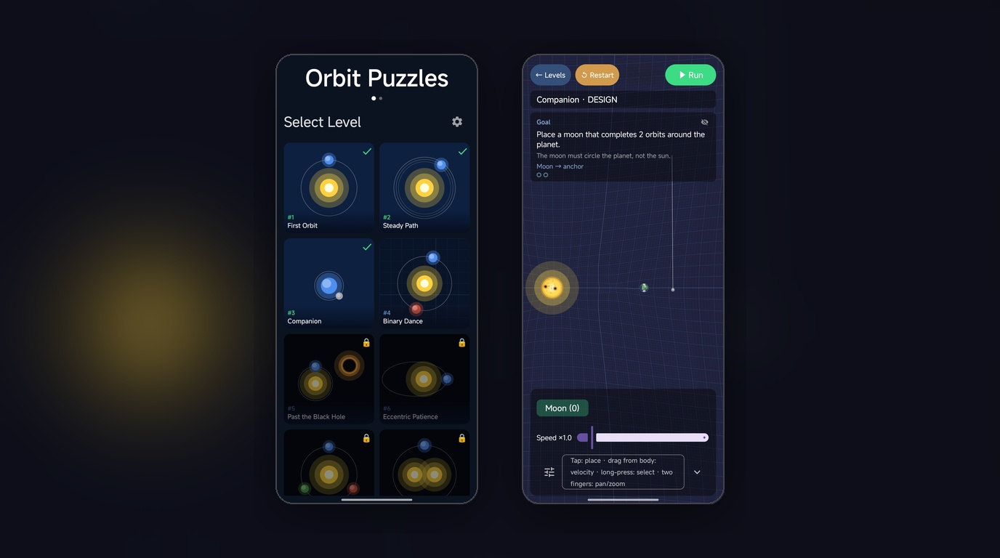
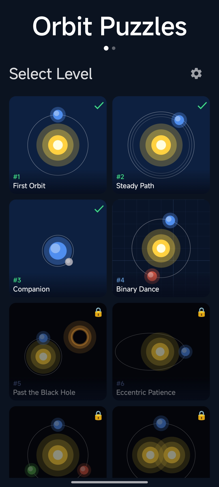
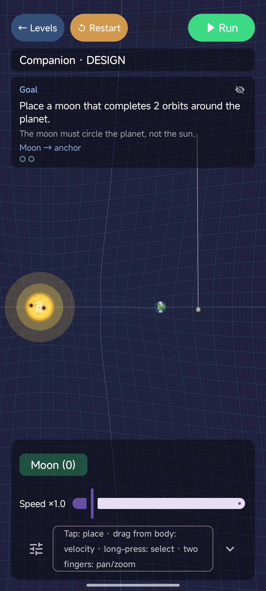
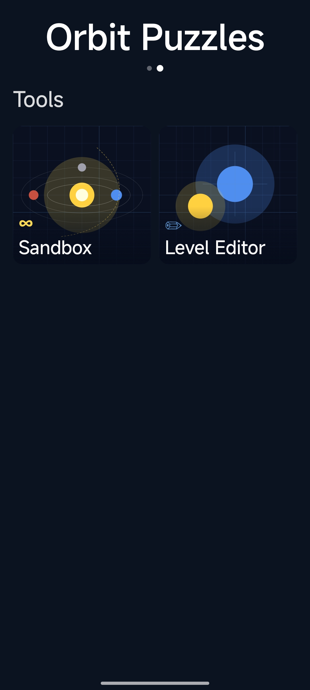
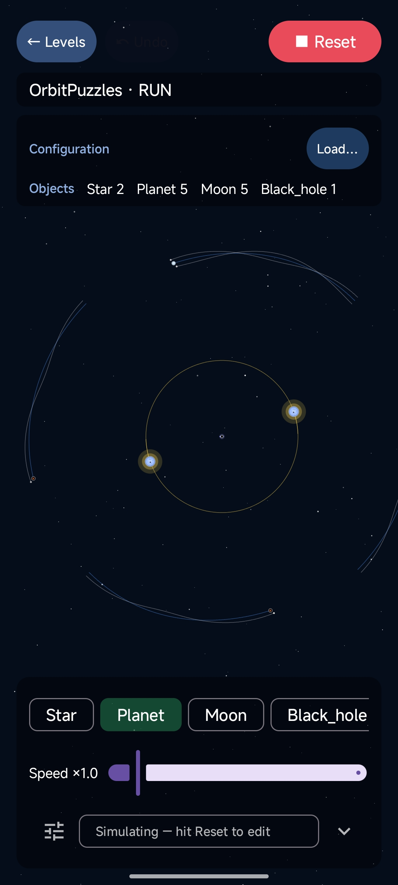
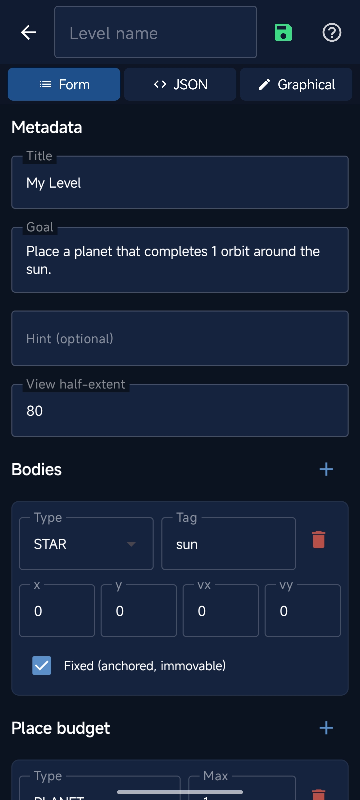
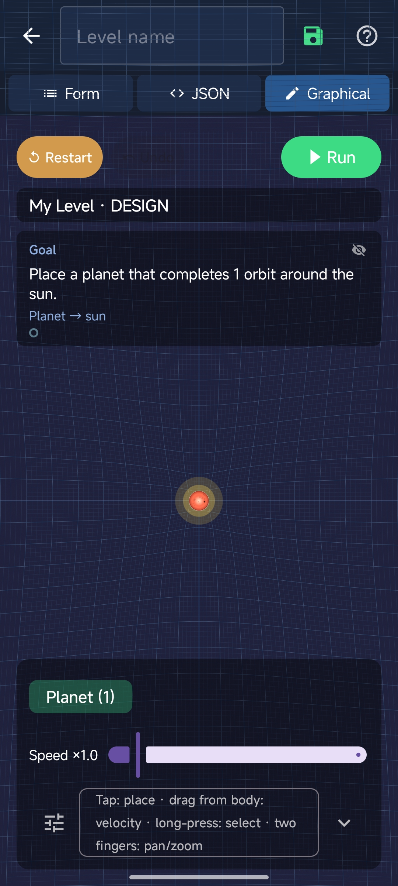

Jugar y explorar
GravityTDG
Un giro a la defensa de torres: usa la física orbital y rayos de rescate para salvar vidas.
Pon a prueba tu intuición sobre la gravedad con puzles de física orbital.

OrbitPuzzles es un desafiante juego de rompecabezas basado en la física en el que los jugadores diseñan sistemas orbitales colocando estratégicamente cuerpos celestes como planetas, lunas y asteroides. Tu objetivo es lograr configuraciones específicas, como completar un número determinado de órbitas sin chocar con la estrella central ni escapar del sistema.
Construido de forma completamente nativa en Kotlin, OrbitPuzzles presenta un simulador de N-body $O(N^2)$ personalizado altamente estable que utiliza la integración de Velocity Verlet y el suavizado Plummer. El tiempo se detiene durante la fase de DISEÑO para que puedas posicionar cuidadosamente tus cuerpos y ajustar los vectores de velocidad, y luego fluye en la fase de EJECUCIÓN para probar si tu mecánica orbital se mantiene.
La experiencia visual combina la renderización 3D impulsada por Google Filament con la interfaz de usuario 100% Jetpack Compose. Cada cuerpo celeste se representa utilizando texturas procesales personalizadas, creando una variedad infinita de planetas y estrellas sin depender de archivos de texturas masivos, mientras que los rastros brillantes y las superposiciones de la interfaz de usuario brindan telemetría y retroalimentación en tiempo real.






Un giro a la defensa de torres: usa la física orbital y rayos de rescate para salvar vidas.

Sigue los trenes de Rumanía, sus rutas y los cambios en sus retrasos.

Consulta la temperatura de casa con el historial de sensores y gráficos.